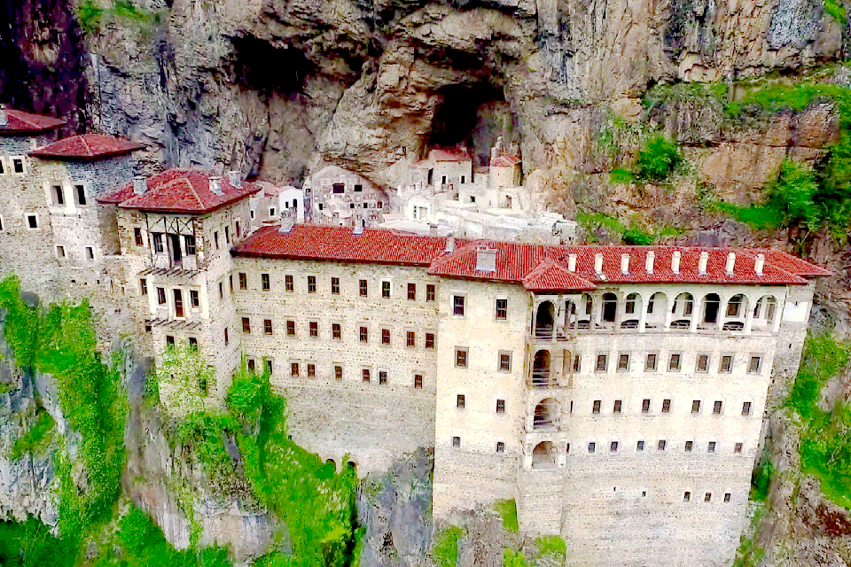

Trabzon Hakkında
Trabzon, Karadeniz Bölgesi'nin en gözde şehirlerinden biridir. Tarihi yapıları, yemyeşil doğası ve Sümela Manastırı gibi önemli turistik yerleriyle ünlüdür. Aynı zamanda Karadeniz mutfağının zengin tatlarıyla da dikkat çeker.
Trabzon'da Ziyaret Edilmesi Gereken Başlıca Yerler:
- Sümela Manastırı: Dağın eteğine inşa edilmiş olan bu manastır, Trabzon'un en ikonik yapılarından biridir ve bölgedeki tarihi mirası simgeler.
- Uzungöl: Eşsiz doğasıyla ünlü olan Uzungöl, yemyeşil ormanları ve göletiyle doğa severlerin ilgisini çeker.
- Trabzon Ayasofyası: Bizans dönemine ait bu tarihi yapı, hem dini hem de kültürel açıdan büyük öneme sahiptir.